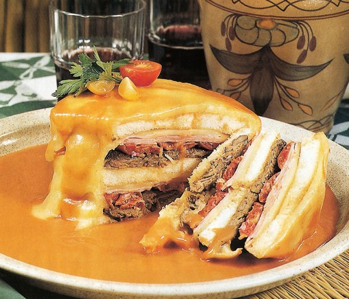

Francesinha

Description
The perfect portuguese sandwich, covered in a delicious, rich sauce. Everyone has a different recipe and it can change dramatically in each region so this is just one possible interpretation.
Ingredients (sauce and sandwich):
- 1 onion
- 2 garlic cloves
- 1 bay leaf
- 2 dried chilli peppers
- Olive oil
- 1 can of peeled tomatoes
- 1 tsp. English sauce
- 50ml of good Port
- 50ml of good white wine
- 1 good beer
- 1 tsp. of corn starch
- Sliced bread
- 2 rump steaks
- Sliced cheddar cheese
- 2 good sausages
- 2 linguiça sausages
- Smoked ham
- Sliced flamengo cheese
- 1 egg
Steps:
- Start cooking the sauce by finely chop the onion and garlic, and fry it in a generous portion of olive oil with the bay leaf;
- As soon as they brown, add the chilli pepper and the tomatoes, breaking it apart with your hands as you place it in the pan. Let it come to a boil and add all the liquids;
- Add the corn starch, dissolved in cold water. Season with salt and pepper and let it again come to a boil, stiring it ocasionally;
- Strain the sauce before placing it in the gravy boat. Only take it out at the last second, the longer it cooks the better it will taste;
- To cook the sandwich, start by drying the steaks with a paper towel, then season them with salt and pepper before setting them aside;
- Cut the sausages longitudinally and then halve them;
- In a scorching hot pan fry the sausages and the steaks, very briefly. Start with the sausages to use their fat;
- After swiping the bread on the pan, start assembling the sandwich. The first layer is the bread, followed by the cheddar, the ham, the sausages, the steak, then another piece of ham and the flamengo cheese. Close it with another slice of bread and cover it in your heavenly made sauce;
- Put it in a pre-heated oven at 230C, just to melt the cheese. Serve it with a fried egg on top and add more sauce if necessary. Enjoy!